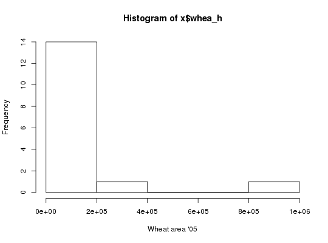

Download HarvestChoice indicators in raster and/or tabular formats
Usage
genFile(var, iso3 = "SSA", by = NULL, format = c("csv", "geojson", "tif", "dta", "asc", "rds", "grd"), dir = ".", ...)
Arguments
- var
- character array of indicator codes, passed to
getLayer - iso3
- character array of ISO3 country or region codes, passed to
getLayer - by
- character array of indicator codes to summarize by, passed to
getLayer - format
- output format, one of "csv", "json", "tif", "dta", "asc", "grd", "rds".
- dir
- output directory, default to current working directory
- ...
- any other optional argument passed to
getLayer, e.g.as.class,collapse.
Value
-
character, array of generated file names included in the data package
Description
Package result from getLayer into any user-specified tabular or
spatial raster format. Also includes README and Tabular Data Package specifications.
Currently supported export formats include CSV (csv), STATA (dta), GeoJSON (geojson),
GeoTIFF (tif), R raster (grd), RData (rda), ESRI ASCII raster (asc), and netCDF (nc).
Calling genFile(var="bmi", iso3="TZA", format="dta") is equivalent to calling
the convenience method hcapi(var="bmi", iso3="TZA", format="dta").
Examples
# Total wheat harvested area across 16 agro-ecological zones in Nigeria and Ethiopia # in STATA format x <- genFile("whea_h", iso3=c("NGA", "ETH"), by="AEZ16_CLAS", format="dta") # Load generated STATA file require(foreign)Loading required package: foreignx <- read.dta(x[1]) # Plot histogram with full layer title hist(x$whea_h, xlab=vi["whea_h", varLabel]) # Sorghum production in Nigeria in ESRI ASCII raster format x <- genFile("sorg_p", iso3="NGA", format="asc")
# Load and plot generated raster require(raster)Loading required package: raster Loading required package: sp Attaching package: ‘raster’ The following object is masked from ‘package:data.table’: shiftx <- raster(x[1]) plot(x, main=vi["sorg_p", varLabel])
cellStats(x, "mean")[1] 897.064# Equivalent cUrl requests at the command line # curl http://hcapi.harvestchoice.org/ocpu/library/hcapi3/R/genFile \ # -d '{"var" : "whea_h", "iso3" : ["NGA", "ETH"], "by" : "AEZ16_CLAS", "format" : "dta"}' \ # -X POST -H 'Content-Type:application/json' # /ocpu/tmp/x0e654538b7/R/.val # /ocpu/tmp/x0e654538b7/stdout # /ocpu/tmp/x0e654538b7/warnings # /ocpu/tmp/x0e654538b7/source # /ocpu/tmp/x0e654538b7/console # /ocpu/tmp/x0e654538b7/info # /ocpu/tmp/x0e654538b7/files/DESCRIPTION # /ocpu/tmp/x0e654538b7/files/README # /ocpu/tmp/x0e654538b7/files/whea_h-AEZ16_CLAS-NGA.dta # Use wget (at the command line) to download all generated files in a ZIP archive # wget http://hcapi.harvestchoice.org/ocpu/tmp/x0e654538b7/zip # curl http://hcapi.harvestchoice.org/ocpu/library/hcapi3/R/genFile \ # -d '{"var" : "sorg_p", "format" : "asc"}' \ # -X POST -H "Content-Type:application/json" # /ocpu/tmp/x02a7a044c7/R/.val # /ocpu/tmp/x02a7a044c7/stdout # /ocpu/tmp/x02a7a044c7/warnings # /ocpu/tmp/x02a7a044c7/source # /ocpu/tmp/x02a7a044c7/console # /ocpu/tmp/x02a7a044c7/info # /ocpu/tmp/x02a7a044c7/files/DESCRIPTION # /ocpu/tmp/x02a7a044c7/files/README # /ocpu/tmp/x02a7a044c7/files/sorg_p--SSA.asc # /ocpu/tmp/x02a7a044c7/files/sorg_p--SSA.asc.aux.xml # /ocpu/tmp/x02a7a044c7/files/sorg_p--SSA.prj # Then use wget to download all generated files in a ZIP archive # wget http://hcapi.harvestchoice.org/ocpu/tmp/x02a7a044c7/zip

See also
datapackage to generate associated metadata records